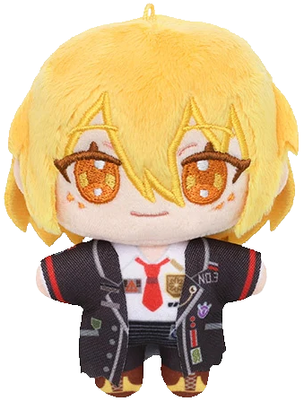

one, two,
one, two, three, four!
we're
swaying
on horseback, the hills are green.. and the birdies
sing
! and roses are
pink
! experience i never had, i'm so happy (//^_^//) happy to just be part of your story. after you, i follow, after you, i follow, the world you show me
broaden my horizon.
forever my
HERO
, forever my
HERO
! i am your biggest fan, i am your biggest fan!
merry-go-round
in a circle i run,
it's so much fun leaving reality behind!
one, two,
one, two, three, four.
i fall down the horseback, with my cripple legs
, and then it starts to rain, showing me it's all fake. raindrops wash down the facade; hills are
painted
, birdies are
robotic
, roses are made of
clay
.. excitement that i feel, excitement that i
feel
.. return them to the shelf 'cause now i
understand
. heroes cannot be real.
heroes cannot be real.
i wasn't who i am.
i don't know who i am..
who am i?
who am i?
who am i?!?!
here we go another lap,
prizes to claim!
here's a dream for you, here's a dream for me!
golden tickets
in my bag stay unexchanged. don't you love the
thrill
of the
chase?
just let me be your fan,
i wanna be your fan,
i'm still your biggest fan!! .. why is it that some were given the role of villain the moment they were released into this system? one, two,
one, two, three, four.
stand up,
gallop on
.
nothing can be done by feeling so sorry for myself.
HERO
on a plastic horse!! fighting like it's real, with a cardboard sword.. i know successful or not,
i am who i am
. i am my biggest fan,
i am my biggest fan,
i am my
enemy
and my
friend
.
HERO
, gonna prove my version of justice, is more just than yours!!
uno
, remaining on this stage, i am the only one. i am my biggest fan, i am my biggest
fan
. i am my
enemy
and my friend.
my name sancho
i'm an oasis in an empty desert cultivated by pixels
view my site
